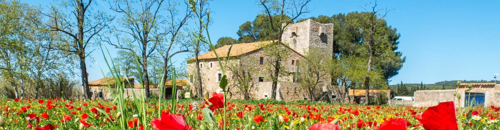

Ruta · Montgrí
Segona de les dues etapes per recórrer l’entorn del Parc Natural del Montgrí, Illes Medes i el Baix Ter. Passarem per la part oest dels contraforts del massís del Montgrí, el litoral de l’Estartit…